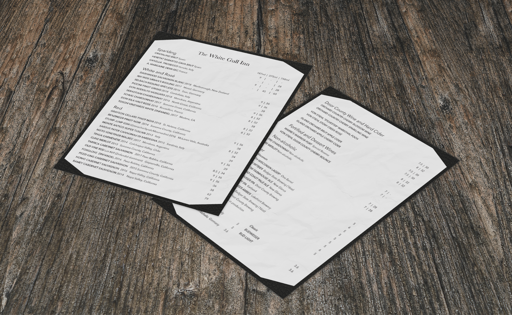
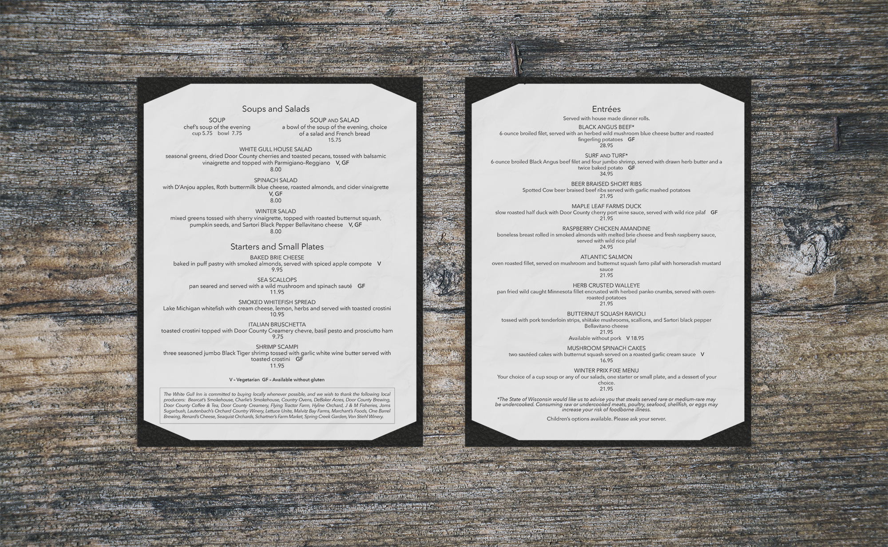
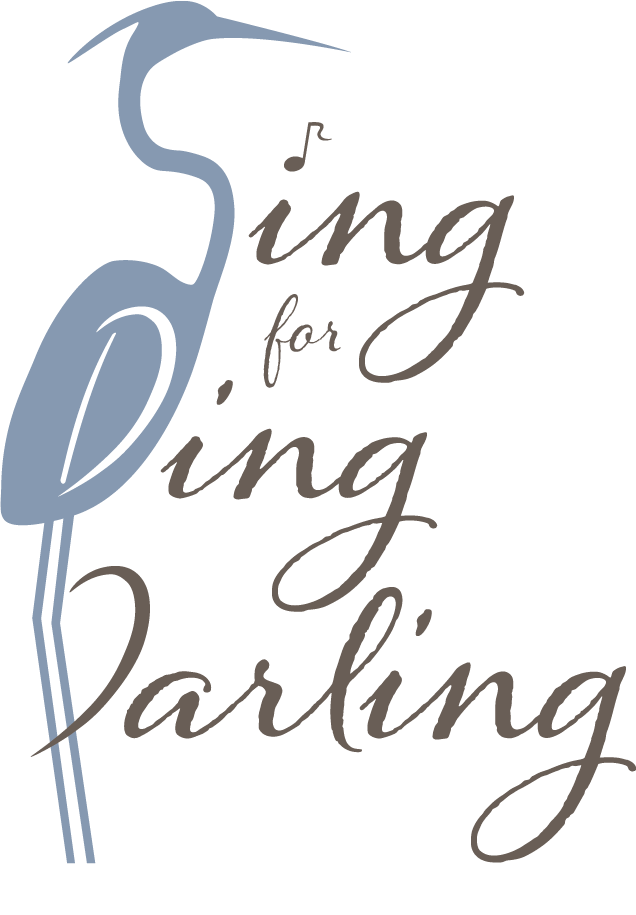
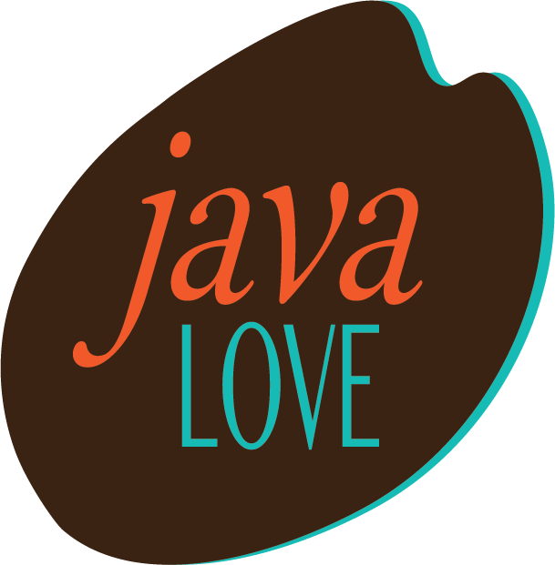
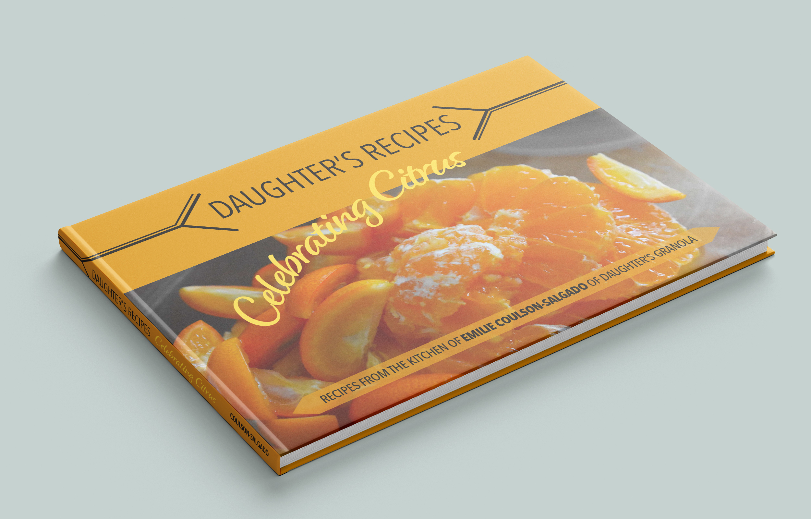
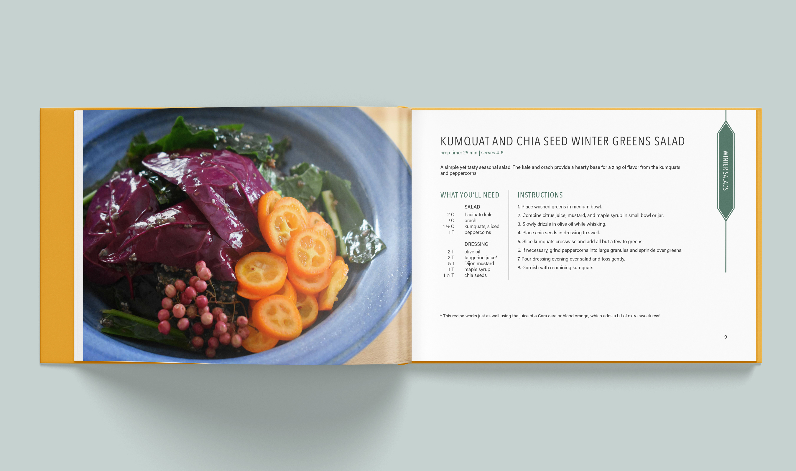

Design Projects
Poppy Thai is a chain of restaurants on the South Island of New Zealand, offering authentic Thai cuisine for dine-in/BYO and take-away dining. Following a management restructure, Poppy Thai sought to relaunch its corporate identity with an updated logo and refreshed image. View full project.


After 45 years of ownership, Andy and Jan Coulson passed ownership of the family buisness on to their daughter Meredith Coulson-Kanter and her husband Chris. Wanting to breathe new energy into the White Gull Inn and remain relevant to new younger generations, the Coulson-Kanters have begun redesigning their menus, borchures, and other marketing materials. In January 2020 they launched a new winter menu featuring a new wine selection and seasonal dinner items. View full project.
Located in Marlborough’s Wairau Valley, Nor’wester Wines draws its name from the warm, prevailing winds that sweep through the region. In preparation for releasing the 2018 wines, they are redesigning their label. The key objective of the new design is to reflect the simple sophistication of the well-established brand while paying homage to the climate and terroir that give Marlborough wines their distinct character. View full project.

The Ding Darling National Wildlife Refuge resides in the northeast corner of Sanibel Island, Florida. Founded in 1982 and named for cartoonist and avid conservationist J.N. ‘Ding’ Darling, the refuge occupies approximately 6,400 acres of wetlands and is home to more than 245 species of birds. Relying primarily on donations for operation and upkeep, the refuge is a benficiary of the Ding Darling Wildlife Society, which organises events to raise funds and awareness. The 2018 campaign is in the format of a talent show where proceeds from tickets to participate and attend benefit the refuge. The key objective is to inspire residents to support their community and its wildlife. View full project.

Java Love (est. 1984) is the largest coffee company in Kenya. They proudly use only the best beans from local, organic producers to create their distinct, bold blends. Hoping to grow their reputation and following in export markets, Java Love has redesigned their logo and corporate identity to launch in markets worldwide. Targeting primarily graduate students ages 21-25, the key obective of the new corporate identity is to present Java Love as the edgy, conscientious, and sustainable brand it is. View full project.


Daughter’s Recipes is the first cookbook released by Emilie Coulson-Salgado, founder and proprietor of Daughter’s Granola. When she launched the business in 2014, Emilie based its concept on what a large influence eating her parents’ granola had on her appreciation of breakfast. Hoping to have a similar positive influence on her followers, Emilie wanted to create a cookbook that inspired others to enjoy the simplicity of cooking with seasonally available ingredients. Therefore, the cookbook’s key objective is to entice readers with photos while maintaining a clean and unintimidating instructional layout. View full project.